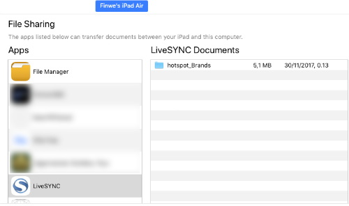
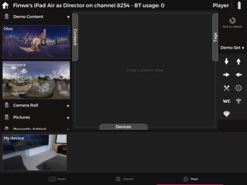
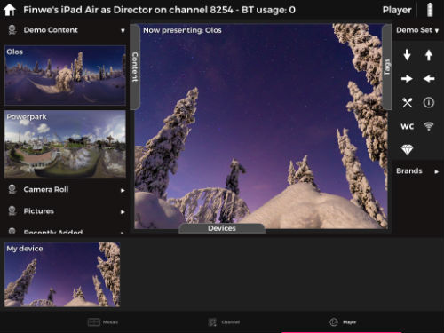
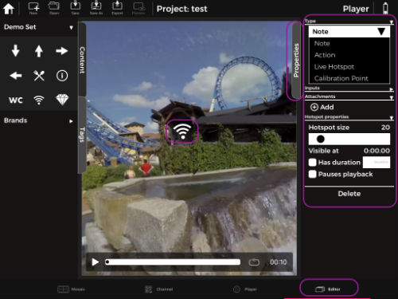
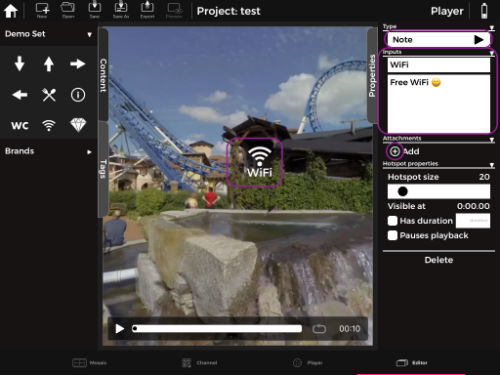
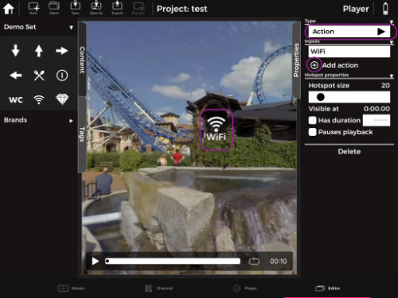
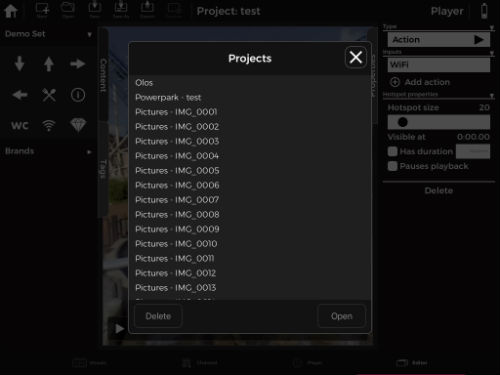
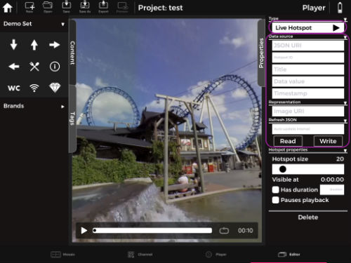
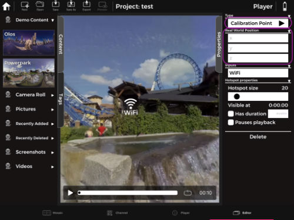
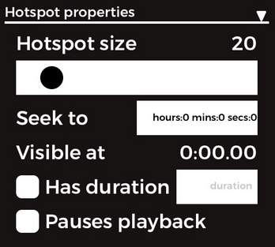

9. Tags & Hotspots
Adding Tags¶
Marking with tags¶
Is it possible to add own tags?¶
In LiveSYNC it is possible to add own tags. Make sure the icons are in .png format and all your icons are in a folder. Add "hotspot_" before folder name e.g. hotspot_Brands then copy the folder to LiveSYNC directory.

Pull Tags section from the director device to refresh its content.

After refreshing the tags section you will see your tags added to the list by the name you provided after "hotspot_", in this case, icons will be seen in Brands folder with a drop-down arrow icon.


The enterprise version of LiveSYNC has a fourth tab called Editor. The Editor tab is designed for clients and industries who require an interactive annotation using hotspots and tags. This enterprise version comes with a feature to save projects, edit or reuse saved projects, add tags with title and remarks, and later export presentations as pdf format.
On the Editor tab once you add a hotspot you're able to see properties window on right side. From properties window, you can choose the type of hotspot by tapping on the drop-down arrow under Type. Hotspot type can be Note (default), Action, Live Hotspot or Calibration Point. It is also possible to adjust and customize hotspot size and visibility for the same window.

Hotspot types¶
Note¶
Note is default hotspot action type. With Note type, you have an option to add a title and long description text to your hotspot icons and add multiple attachments by pressing the + Add button.

Note
Make sure you tap Save every time you make a change. After saving the project choose preview .
Action¶
With Action it is possible to open/redirect to other contents by tapping on the hotspot. Select hotspot -> choose Action from Type -> Add action -> choose the content you want to show when that hotspot is tapped from auto popup project window and you're all set.


Save the changes, tap preview to test the action you defined.
Live Hotspot¶
Live Hotspot is a feature to fetch hotspot icons from web server without copying them to the device. Note that hotspots need to be provided in JSON format.

Calibration Point¶
Calibration point is used for camera normalization. Normalization converts a camera path's coordinates to another coordinate space with given reference points. Click here to read more about camera path normalization.

Hotspot properties¶
Hotspot size: Using the slider it is possible to adjust hotspot icon size. The default value for an icon size is 20.
Seek to: (for video file) it seeks to time stamp provided by the user when the user taps hotspot icon.
Has duration: (for video file) check the box and give a numeric value if you want to display the hotspot for a predefined time duration.
Pauses playback: (for video file) check the box if you want the video to pause when the hotspot is tapped and a predefined action is executed (for example opening a new content).

Tags resolution¶
Make sure you use .png format for hotspots. PNG is a bitmapped image format, which just means it’s a raster image format. There are two PNG formats: PNG-8 and PNG-24. The numbers are shorthand for saying “8-bit PNG” or “24-bit PNG.”
PNG-24 can handle a lot more color and is good for complex images with lots of color such as photographs (just like JPEG), while PNG-8 is more optimized for things with simple colors, such as logos and user interface elements like icons and buttons.
The recommended hotspot resolution for LiveSYNC is 512pixel X 512pixel. Sample hotspot icons can be downloaded from here.